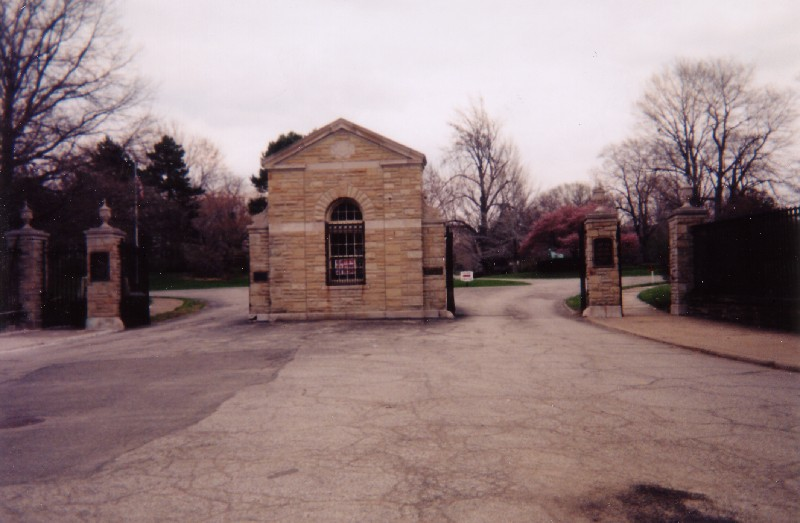
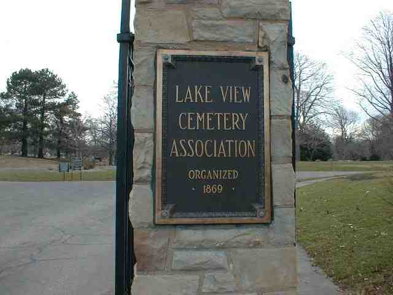
The largest and most significant graveyard in the state of Ohio is, without a doubt, Cleveland's Lake View Cemetery. Located at 12316 Euclid Avenue on the city's east side, it was founded in 1869, covers 285 acres, and contains more than 101,000 dead people, with about 700 added each year. So many Italian stonemasons and gardeners immigrated to Cleveland to work in the new cemetery that the neighborhood they formed, Little Italy, still exists nearby.
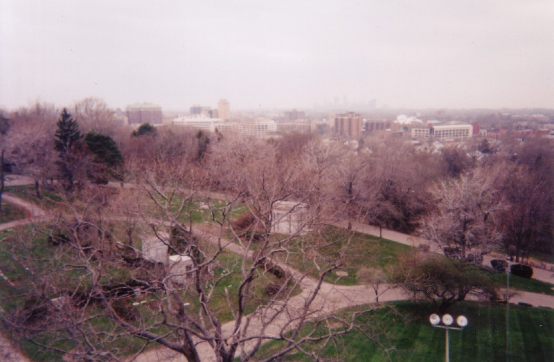
Like Ohio's other big municipal graveyards (Greenlawn, Spring Grove, and Woodland), Lake View is part arboretum and wildlife refuge. It was established and laid out at a time when cemeteries were popular as parks, so it's filled with landscaped hills and decorative ponds and such. Though it's not on the lake shore, it is within sight of the water. And it happens to have a stream blocked by the largest poured-concrete dam east of the Mississippi River.
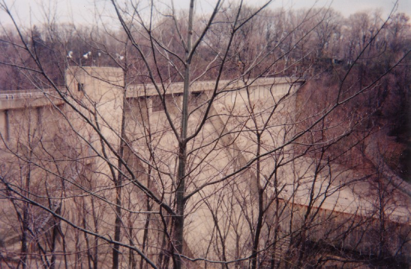
The official brochures describe Lake View as "Cleveland's Outdoor Museum." It's listed on the National Register of Historic Places, in part because of the vast amount of original architecture and sculpture that adorn the gravesites. The angel statuary in particular has made Lake View a destination for afficionados of funerary art.
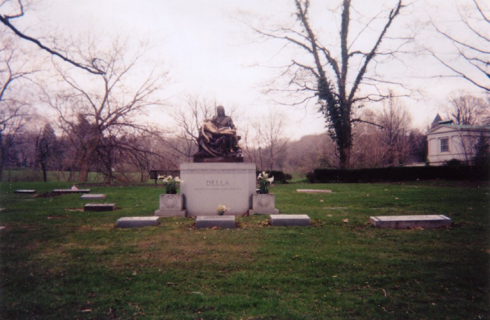
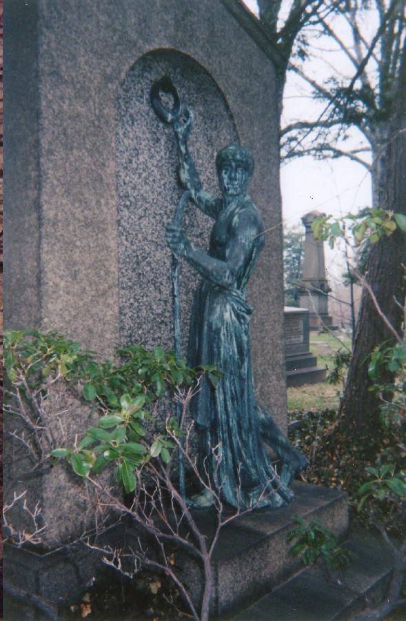
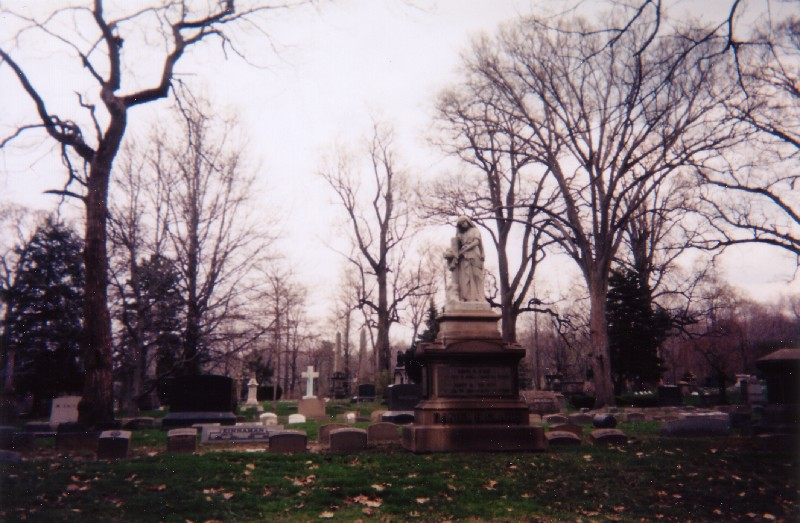
What really sets Lake View apart is its status as the number one cemetery for what has historically been Ohio's number one city. At one point, Cleveland was the sixth largest city in the entire nation. (Today it's 35th, with Columbus at number 15.) The roster of famous names at Lake View is nearly endless, beginning with President Garfield. Here is a partial list of the important figures laid to rest at Lake View Cemetery:
-
James A. Garfield
-
20th President of the United States. Previously a member of the Ohio State Senate and US House of Representatives; President of Hiram College; and Major General in the Union Army during the Civil War. He was shot by Charles Guiteau on July 2, 1881, but killed by infections introduced by his medical team--including the Surgeon General, who punctured the lining of Garfield's liver with his index finger. He died on September 19, 1881, having been President just 200 days, second only to William Henry Harrison for shortest term. His mausoleum was completed in 1890 and he was laid to rest in the basement rotunda, with his wife, Lucretia, joining him in 1926. His coffin is draped with an American flag. (Click here for a look at the Garfield Memorial.)

-
John D. Rockefeller
-
Founder of Standard Oil and the richest man in the world; adjusted for inflation, the richest man who ever lived. He was worth a billion dollars at the turn of the twentieth century.
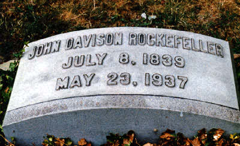
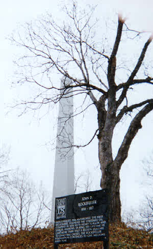
-
Eliot Ness
-
Leader of the Untouchables, the Treasury Department agents who brought Al Capone to justice in 1930s Chicago. Afterward he took a job as Director of Public Safety in Cleveland, where he improved traffic laws, enforced municipal codes, and hunted (unsuccessfully) the Torso Killer. His ashes are spread over the pond near his memorial.
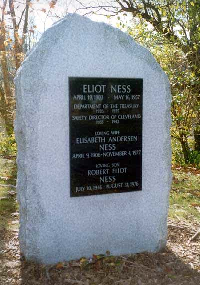
-
Newton Baker
-
Secretary of War during World War I; Woodrow Wilson's protegee and one of the architects of the League of Nations.
-
Mark Hanna
-
US Senator from Ohio and powerful old guard Republican whose influence helped nominate Garfield and McKinley. He and Theodore Roosevelt represented the opposite viewpoints of the Republican Party; business leaders who hated Roosevelt's progessivism wanted to nominate Hanna for President in 1904, but Hanna died right before the convention and Roosevelt won the nomination easily.
-
Carl B. Stokes
-
Mayor of Cleveland, 1967-71; first black mayor of a major American city.
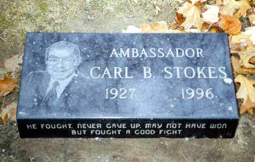
-
Jeptha Homer Wade
-
Founder of Western Union.
-
George Washington Crile
-
Doctor who performed the first successful human blood transfusion.
-
Dayton Clarence Miller
-
X-ray pioneer who produced the first full x-ray of the human body.
-
Charles F. Brush
-
Invented the arc lamp in 1879, the first electronic light to illuminate city streets.
-
Raymond Johnson Chapman
-
Cleveland Indians shortstop who holds the distinction of being the only professional baseball player to have died from being hit by a pitch. On August 16, 1920, Yankee Carl Mays hit him in the temple with the ball; he collapsed and never regained consciousness, dying the following day.
-
Alexander Winton
-
First person to sell automobiles commercially in the US; also inventor of the Winton automobile.
-
Gertrude Harrison
-
First women's golf professional in the United States.
-
Middleton Hugher Lambright
-
Early black doctor who got his medical license in 1898 and became the first black man to head a hospital department. Helped found Cleveland's first interracial hospital, Forest City Hospital, in 1939.
-
Charles Waddell Chestnutt
-
Author of mixed race who pioneered the use of black dialect in his writing and tackled difficult racial subjects in the early twentieth century. He served on the NAACP's general committee and received their Springarn Medal for his work.
-
Liberty Emery Holden
-
Founder and publisher of the Cleveland Plain Dealer.
-
Cleveland Mayors
-
Edward Blythin (1940-41); William Case (1850-52); William B. Castle (1855-57); Herman M. Chapin (1865-67); Edweard S. Flint (1861-63); Josiah A. Harris (1847-48); Rensselaer R. Herrick (1879-82); Lorenzo A. Kelsey (1848-49); Fred Kohler (1922-23); John D. Marshall (1925-31); Robert E. McKisson (1895-98); Charles Augustus Otis (1873-75); Nathan P. Payne (1875-77); William Ganson Rose (1877-78, 1891-92); Samuel Starkweather (1844-46, 1857-58); Carl B. Stokes (1967-71).
-
Ohio Governors
-
Harry L. Davis (1921-23); Herbert J. Thomas (1947-49).
-
US Senators from Ohio
-
Robert J. Bulkley (1930-39); Theodore Elijah Burton (1908-15, 1928-29); Mark Hanna (1897-1904); Henry B. Payne (1885-91).
The Collinwood Memorial


One monument on the grounds pays tribute to the 172 students and 2 teachers who died in America's worst school fire--the Collinwood fire, which ravaged an elementary school called, coincidentally, Lakeview. Around 9:30 on the morning of March 4, 1908, while students in the Cleveland suburb of Lakeview sat in class, flames erupted when a hot pipe ignited a wooden beam. An explosive fire tore through the wooden interior, trapping many students in classrooms and dead-end hallways. Some have said that the exterior doors opened inward instead of outward, and that crowds of students died pressed against them; it turns out that, though the building was a true firetrap, the doors did open out. The fire simply travelled too quickly for many people to escape.


In the aftermath, temporary morgues had to be set up for the nearly two hundred bodies. Much like the Triangle Shirtwaist fire, the Collinwood tragedy brought to the nation's attention the need for changes in school building codes and evacuation plans. Nineteen students' bodies were never identified, and it's these that are buried beneath the Collinwood School Fire Memorial at Lake View Cemetery. Other victims--identified ones--are buried in other places around the cemetery, beside family members.
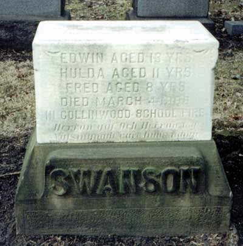
When it comes to statuary, it's impossible to talk about Lake View without talking about the Haserot angel, Cleveland's most famous piece of graveside art. A click on the photo below will take you to a separate page with more photos and information about the famous angel.

The Haserot Angel
There are rumors that Lake View is haunted, but they tend to be the vague sort of friend-of-a-friend stories that are told about any sizable graveyard. As important a morbid landmark as it is, the cemetery is always conspicuously absent from late-October surveys of the city's haunted hot spots.
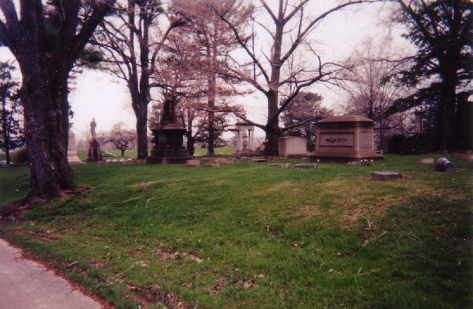
Lake View has thousands more unique and important memorials than I can list here. My own visits have proven well worth the drive. You'll find the graveyard open from dawn 'til dusk at 12316 Euclid Avenue; for more information, call (216) 421-2665. Click below to view a full-size map of the cemetery.
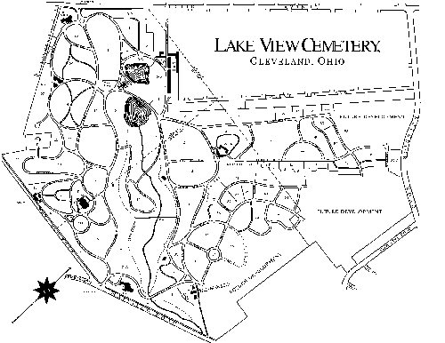
The Garfield Mausoleum
The Haserot Angel
Lake View Cemetery.com - Official Site
Find-A-Grave: Lake View Cemetery
Wikipedia: Lake View Cemetery
The Political Graveyard: Lake View Cemetery, Cuyahoga County, OH
The Cemetery Project: Lake View Cemetery
Bay Images: Lake View and the Garfield Monument
Dead Ohio: Lake View Cemetery
Back